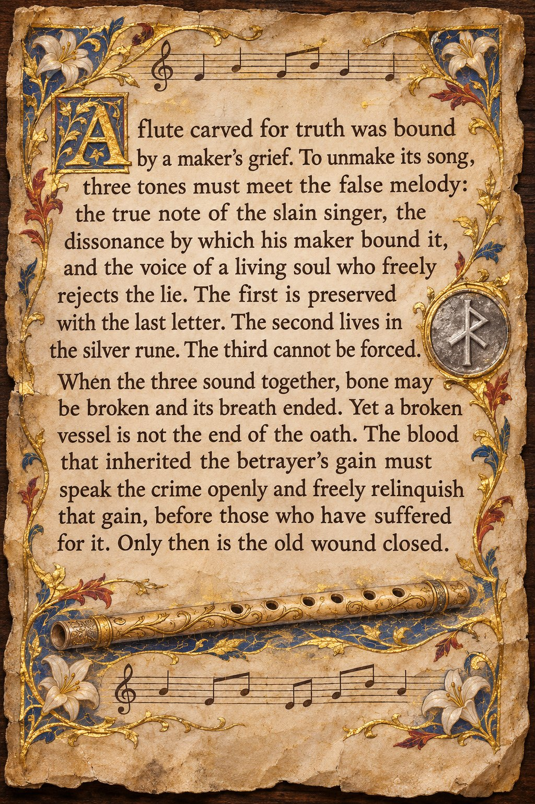

A flute carved for truth was bound by a maker's grief.
To unmake its song, three tones must meet the false melody: the true note of the slain singer, the dissonance by which his maker bound it, and the voice of a living soul who freely rejects the lie.
The first is preserved with the last letter. The second lives in the silver rune. The third cannot be forced. When the three sound together, bone may be broken and its breath ended.
Yet a broken vessel is not the end of the oath. The blood that inherited the betrayer's gain must speak the crime openly and freely relinquish that gain, before those who have suffered for it. Only then is the old wound closed.